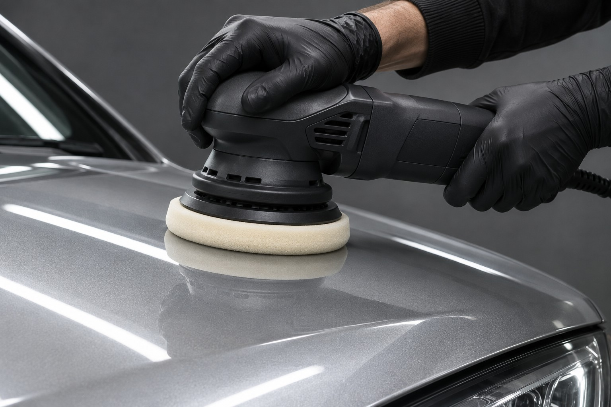

Демонстрационный лендинг
Полировка кузова
Боковой свет показывает мелкие следы моек и потускневшие участки. Полировка помогает уменьшить их видимость и вернуть покрытию блеск.
Рассчитать полировкуЧто входит в работу
- Осмотр
- Оцениваем глубину следов под направленным светом.
- Подготовка
- Очищаем поверхность и подбираем способ обработки.
- Проверка
- Смотрим, как изменилось покрытие под тем же светом.